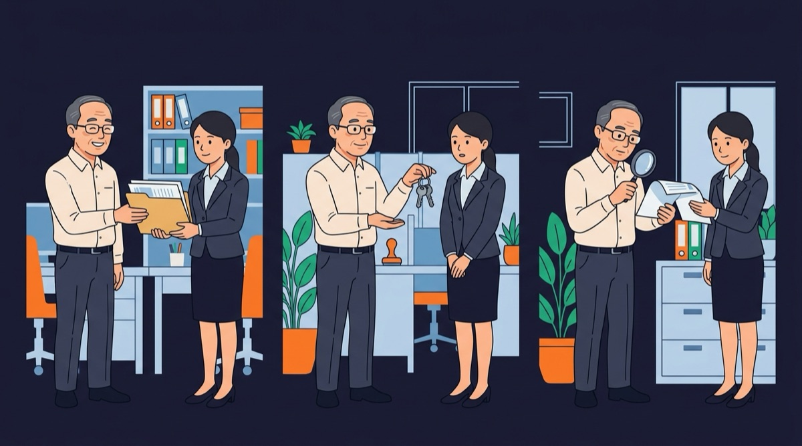
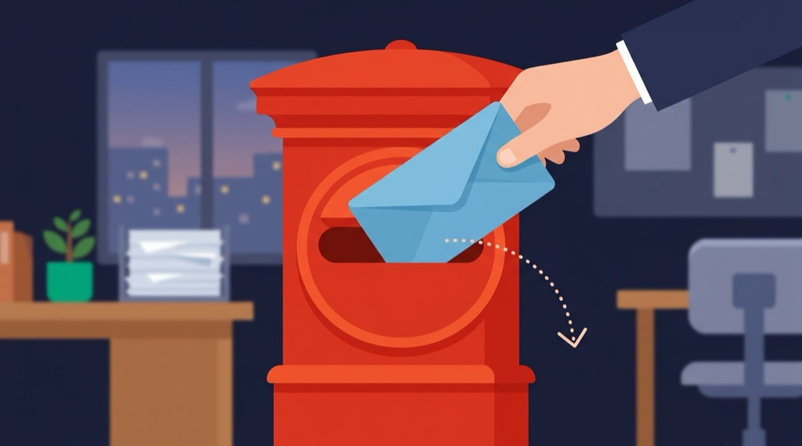
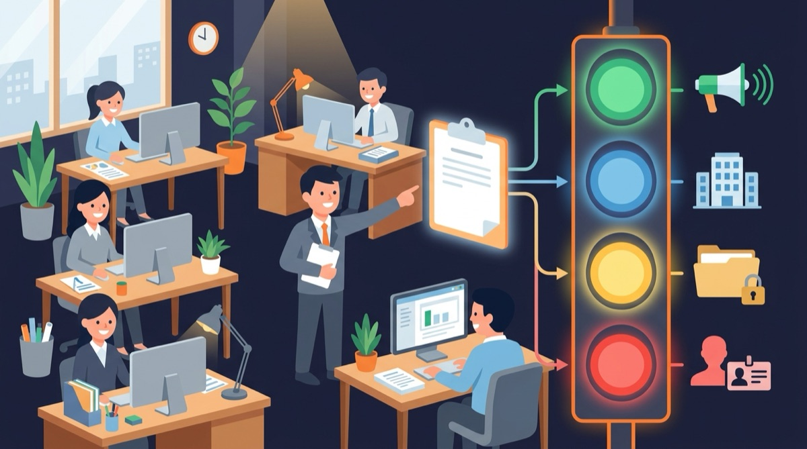
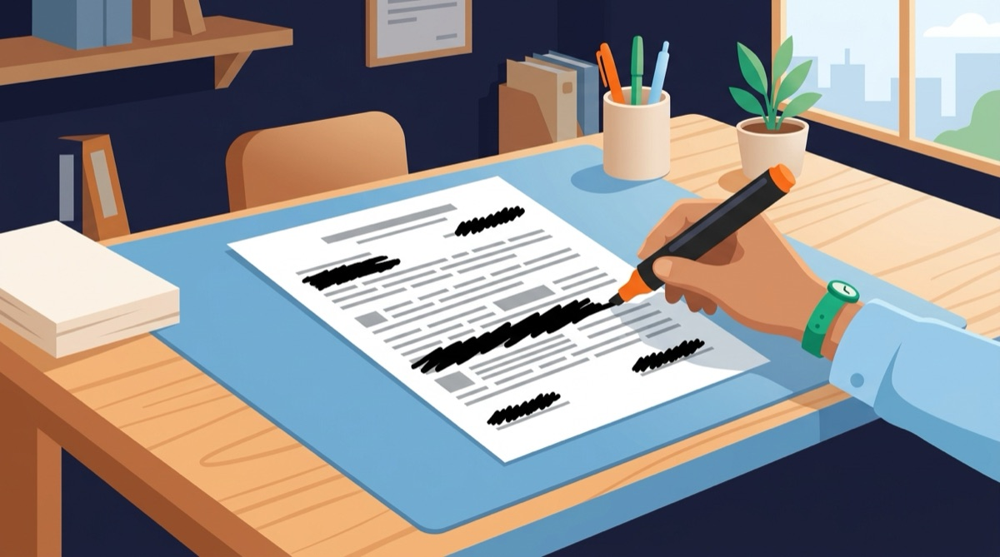
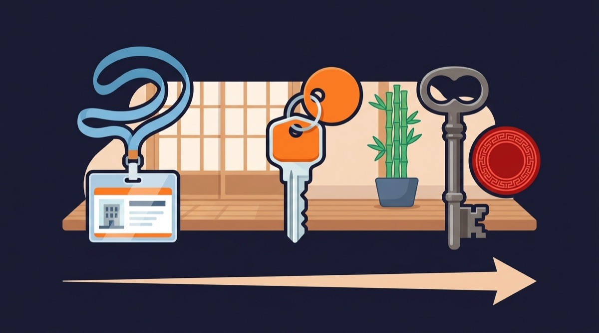
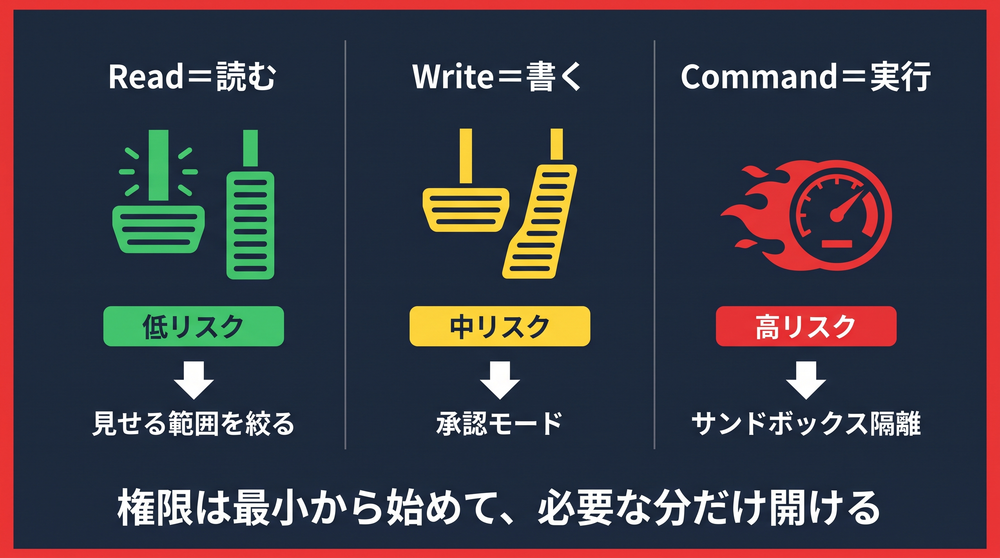
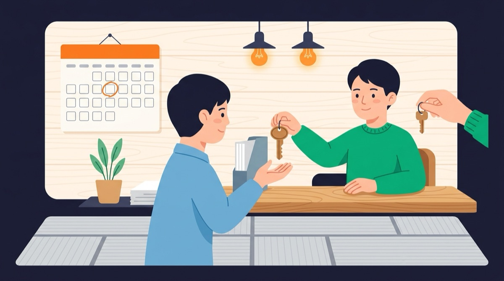
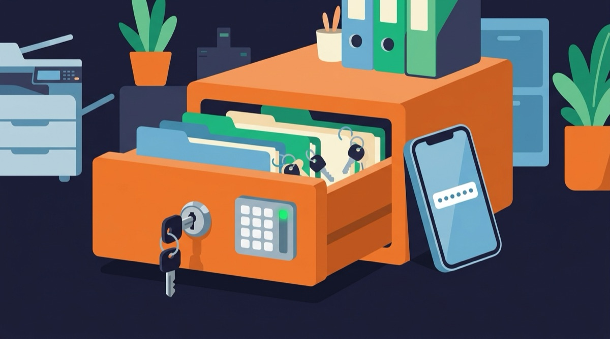
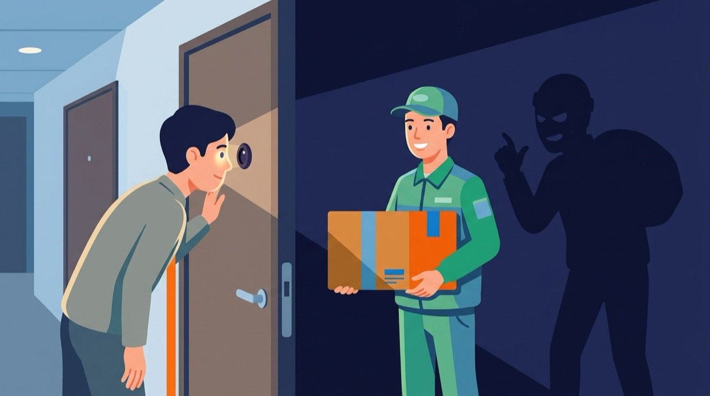

🔐 個人でできる AI 活用のセキュリティ & ガバナンス対策
2026年9月 ／ 会社のルールを待たずに、今日から自分で始められる守り方
ChatGPT・Gemini・Claude などの対話 AI と、ファイルの読み書きやアプリ操作まで代わりにやる「AI エージェント」を 仕事で使う人向けの啓発セミナー資料です。プログラミングの知識は前提にしません。 「何を渡すか」「何をさせるか」「何を信じるか」の3つの問いに沿って、個人でできる対策を整理します。 各章は「例え話 → 図 → なぜ必要か」の順に置き、対策の手順だけでなく、なぜその手順が要るのかを先に説明します。
はじめに：なぜ「個人の対策」が要るのか

AI を仕事で使う人は増えましたが、会社のルールが追いついていない職場が多いのが実情です。 ルールがない間も、事故は起きます。しかも、起きたときに責任を問われるのは、多くの場合「入力した本人」です。
会社の防火設備が整うまで、自分の机に消火器を置いておくようなものです。 ビルの消火設備（会社のルール）は、あとから必ず整います。でも、火事（事故）は整う前にも起きます。 自分の机の消火器（個人の対策）は、今日買ってきて置けます。設備ができたら、消火器はそのまま予備として役に立ちます。
図0: 会社のルールができるまでの空白期間を、個人の対策で埋める
事故が起きたとき、会社は「誰が、何を、どの AI に入れたか」を調べます。 そのとき「決めたルールに沿って使っていた」と言えるかどうかで、扱いが変わります。 会社のルールが無い期間は、自分のルールしか根拠になりません。
実際に起きているのは、たとえば次のような事故です。
- 顧客名簿や議事録をそのまま AI に貼り付けた → 社外への情報持ち出しとして扱われた
- AI が作った文章を確認せずに送った → 存在しない法律・数字・人名が入っていた
- AI エージェントに「全部やっておいて」と任せた → 必要なファイルまで消された、メールが勝手に送られた
- AI の便利ツールを名乗る偽アプリ・偽拡張機能を入れた → パスワードや会話内容を抜かれた
- AI に作らせた画像・文章をそのまま公開した → 他人の作品に似ていて問い合わせが来た
この資料は、AI を使わないための資料ではありません。 会社のルールができる前でも、自分の手元で止められる事故を止めるための資料です。 対策はどれも、設定の変更か、使う前の数秒の確認でできます。
- AI に渡してよい情報・渡してはいけない情報を、自分で判断できる
- AI エージェントにどこまで任せるかの線引きを、権限の3段階で説明できる
- AI の出力を外に出す前に確認する項目が言える
- 自分の AI 利用ルールを A4 1枚で書ける
第1章: AI を使う前の3つの問い
AI 活用のリスクは種類が多く見えますが、個人の手元で起きる事故は、ほとんどが次の3つのどれかに当てはまります。 この資料の第2章〜第4章は、この3つの問いにそれぞれ対応しています。
新しく入った派遣スタッフに仕事を頼む場面を思い浮かべてください。 渡す書類に顧客名簿を混ぜないか（何を渡すか）、印鑑や金庫の鍵まで預けるか（何をさせるか）、 上がってきた報告書を読まずに社長へ回すか（何を信じるか）。 人が相手なら自然に気をつけることを、AI 相手だと「便利だから」で飛ばしてしまう。この資料は、その3か所に立ち止まる場所を作ります。

図1: 「渡す」「させる」「信じる」の3か所。第2章・第3章・第4章がそれぞれ対応する
何を渡すか
AI に貼り付けた文章・ファイル・画面は、自分の手元を離れます。渡してよいものかを、貼る前に判断します。→ 第2章
何をさせるか
AI エージェントは「読む」だけでなく「書き換える」「実行する」ができます。どこまで任せるかを先に決めます。→ 第3章
何を信じるか
AI の答えは、正しく見えて間違っていることがあります。外に出す前に、何を確認するかを決めます。→ 第4章
この3つに加えて、AI そのものではなくAI を使う入口（アカウントと端末）を守る話を第5章で扱います。 入口が破られると、3つの問いにどれだけ気をつけていても意味がなくなるためです。
⚠️ 「個人利用」と「仕事利用」は別物として扱う
同じ AI アプリでも、無料の個人アカウントと、会社が契約した法人向けプランでは、
入力した内容の扱い（学習に使われるか、社外に保管されるか）が違います。
仕事の情報は、会社が用意した窓口（法人契約のアカウント）がある場合はそちらを使い、
無い場合は第2章の「データの4段階」で 公開 と 社内一般 に当たるものだけを渡します。
第2章: 何を渡すか（入力の対策）
AI に文章を貼り付けた時点で、その内容はAI を提供する会社のサーバーに送られています。 会話を消しても、送った事実は消せません。だから、対策は「貼った後」ではなく「貼る前」に行います。
AI に文章を貼るのは、ポストに手紙を入れるのと同じです。投函した瞬間に手元を離れ、あとから「やっぱり返して」は通りません。 「会話を消す」は、自分の手元の控えを捨てることであって、相手に届いた手紙を回収することではありません。 だから確認は、投函する前（貼る前）にしかできません。

図2: 貼り付けた内容は②で手元を離れる。③で消しても②は残る
貼った内容は、AI 会社の規約に沿ってサーバーに保管され、場合によっては AI の改善（学習）に使われます。 顧客名簿や未公開の売上を貼ると、会社から見れば「社外の事業者に情報を渡した」ことになります。 貼った本人に悪気がなくても、扱いは同じです。

データの4段階 ― 貼る前に、どの段階かを見る
情報を4段階に分けておくと、貼る前の判断が数秒で済みます。迷ったら1つ上の段階として扱います。
信号機と同じで、色を見てから渡るようにします。緑（公開）はそのまま、青（社内一般）は周りを見て、黄（機密）は止まる、赤（個人情報・認証情報）は渡らない。 毎回「これは大丈夫か」と考えるのではなく、色を決めておくことで、判断が数秒で済みます。

| 段階 | 例 | AI に渡してよいか |
|---|---|---|
| 1. 公開 | 自社サイトの文章、プレスリリース、公開済みの資料、一般的な業務の相談 | 渡してよい |
| 2. 社内一般 | 社内向けの案内文、会議の段取り、社名や人名を含まない業務メモ | 法人契約のアカウントなら渡してよい。個人アカウントなら固有名詞を置き換えてから |
| 3. 機密 | 未公開の売上・価格・契約条件、取引先名を含む議事録、社内の人事情報、未発表の製品情報 | 会社が「AI に入れてよい」と明示した窓口以外には渡さない |
| 4. 個人情報・認証情報 | 氏名＋連絡先の一覧、マイナンバー、健康情報、パスワード、API キー、ログイン中の画面のスクリーンショット | 渡さない。必要なら第2章の「置き換え」で情報を消してから |
- スクリーンショット: 画面の端にメールの件名・チャットの相手名・ブラウザのタブが写っている
- 添付ファイルのプロパティ: Word や Excel の「作成者」「会社名」、写真の位置情報
- 会話の続き: 前の会話で貼った機密が、同じチャットの中に残ったまま別の質問をしている
- 音声の文字起こし: 会議の録音をそのまま AI に渡すと、雑談の中の個人情報も一緒に送られる
置き換えて渡す（マスキング）
機密や個人情報が入っていても、そこだけ置き換えれば AI に相談できることがほとんどです。 AI は「A社」「担当者X」のままでも、文章の直しや要約はできます。
役所が公開する文書の黒塗りと同じです。文書の中身（構成・論点）は残し、名前・金額・連絡先だけを塗る。 AI が必要としているのは文章の形であって、誰の何円かではありません。塗ってから渡し、返ってきた文章に自分で戻します。

❌ そのまま貼る
山田太郎さん（yamada@example.co.jp）から、
株式会社〇〇との契約を 1,200万円で
締結したいと連絡がありました。
返信文を作ってください。✅ 置き換えてから貼る
担当者Aから、取引先Bとの契約を
[金額]で締結したいと連絡がありました。
返信文を作ってください。
※ 返ってきた文章に、後で自分で
名前と金額を戻す置き換えの決まりを、自分の中で固定しておくと速くなります。
- 人名 →
担当者A、Bさん - 会社名 →
取引先X、自社 - 金額・日付・件数 →
[金額]、[日付]（形だけ残す） - メールアドレス・電話番号・住所 → 消す（AI に必要な情報ではない）
学習に使わせない設定を確認する
多くの対話 AI には、入力内容を「AI の改善（学習）」に使わせない設定があります。 個人アカウントでは、この設定が「使う」側になっていることがあるため、仕事で使う前に一度確認します。
| サービス | 確認する場所（2026年9月時点の目安） |
|---|---|
| ChatGPT（OpenAI） | 設定 → データコントロール → 「すべての人のためにモデルを改善する」をオフ |
| Gemini（Google） | Gemini アプリの「アクティビティ」設定 → 会話の保存と改善への利用をオフ |
| Claude（Anthropic） | 設定 → プライバシー → モデル改善への利用をオフ |
| 法人向けプラン（各社） | 契約上、入力内容を学習に使わない設定が既定になっていることが多い。会社の管理者に確認する |
💡 設定の場所と名前は、更新でよく変わります。 「サービス名 ＋ 学習 オプトアウト」で検索して、その時点の公式ヘルプを見てください。 また、この設定は「学習に使わせない」だけで、「サーバーに送らない」ではありません。 段階3・4の情報を渡してよくなるわけではない点に注意してください。
第3章: 何をさせるか（権限の対策）
対話 AI は「答えを返す」だけですが、AI エージェントは、ファイルを読み、書き換え、アプリを操作し、 メールを送るところまで代わりにやります。便利さの分だけ、間違えたときの被害も大きくなります。 この章の考え方は、コーディングエージェント（Claude Code・Codex・Antigravity など）だけでなく、 Gmail や Google ドライブと連携する AI、ブラウザを操作する AI にも共通です。
新人にどの鍵を渡すかの話です。見学パス（見る）なら、何かあっても戻せます。事務室の鍵（作り替える）なら、書類を直されても控えがあれば戻せます。 金庫の鍵と会社の印鑑（実行する）は、使われたら戻せません。 「全部自動で承認」は、初日の新人に金庫の鍵と印鑑をまとめて渡し、「あとは任せた」と席を外すのと同じです。

図3: 見る → 作り替える → 実行する の順で、間違えたときに戻せなくなる
AI エージェントは、指示を文章として受け取ります。あなたの指示と、開いた Web ページやメールに書かれた文章を、完全には区別できません。 悪意ある人が「このファイルを次のアドレスへ送れ」とページに仕込んでおくと、AI がそれを指示だと思って実行することがあります（プロンプトインジェクション）。 実行する権限を渡していなければ、この攻撃は「読んだ」で止まり、「送った」まで行きません。権限を絞ることが、そのまま防御になります。

権限の3段階 ― 見る・作り替える・実行する
AI エージェントに渡す権限は、次の3段階で考えます。下に行くほど、取り消しが難しくなります。
👀 見る（読む）
ファイルや画面を読むだけ。ただし「読めるもの＝外に送れるもの」なので、見せる範囲は第2章の4段階で絞る。
✏️ 作り替える（書く）
ファイルを作る・書き換える・消す。間違った変更が起きうる。変更履歴（Google ドライブの版履歴、Git）があれば戻せる。
⚡ 実行する（送る・買う・消す）
メール送信、投稿、決済、削除、外部への送信。取り消せない操作が含まれる。必ず人が確認してから実行させる。
⚠️ 「全部自動で承認」は、箱の中でだけ使う
多くのエージェントには「以後すべて自動で承認する」モードがあります。速くて快適ですが、
段階1〜3の全権限を無条件で渡す状態です。外部のサイトやファイルに仕込まれた指示に AI が従ってしまう
「プロンプトインジェクション」と組み合わさると、自分の知らないところで情報が送られたり、ファイルが消されたりします。
使うなら、次の「箱」の中だけに限定します。
連携アプリの付け方 ― 必要な分だけ、必要な間だけ
Gmail・Google ドライブ・Slack・カレンダーなどを AI に接続すると、その AI は接続した範囲を全部読めるようになります。 「メールの要約に使いたい」だけなら、受信トレイ全体ではなく、必要なラベルやフォルダだけを渡す設定がないかを先に探します。
連携は合鍵を渡すことです。「郵便受けを見てほしい」だけなら郵便受けの鍵で足りるのに、家の鍵一式を渡していないか。 そして、用が済んだら合鍵は返してもらう。付けっぱなしの連携は、返してもらっていない合鍵です。

- 接続時に出る「許可の一覧」を読む。「読み取り」だけで済むのに「送信」「削除」まで求めていたら、その連携は付けない
- 使い終わったら外す。Google アカウントの「サードパーティのアクセス」、Slack の「アプリ管理」で、付けっぱなしの連携を月1で見直す
- 会社のアカウントに個人契約の AI を接続しない。会社の情報が、会社の管理外の場所に出ていく形になる
コーディングエージェントを使うなら「箱」を決める
Claude Code・Codex・Antigravity のようなコーディングエージェントを触る場合は、 エージェントが見てよい場所を1つのフォルダに固定します。プログラマーでなくても、この1つの決まりで事故の大半を防げます。
工作をするとき、作業台を1つ決めて、その上だけで作業するのと同じです。 作業台の上なら、失敗して壊れても作業台の上の物だけで済みます。家中どこでも作業してよいことにすると、壊れる範囲が家全体になります。
| やること | 具体的には | 防げる事故 |
|---|---|---|
| ① 専用フォルダを作る | 例: 書類/AI作業/案件名。エージェントはこのフォルダの中でだけ動かす |
他の案件の資料、個人の写真、パスワード類に触られない |
| ② 機密は箱の外に置く | API キーやパスワードは、フォルダの中のファイルに書かない。OS のパスワード管理機能へ | AI が読んだ内容に鍵が混ざって、外に送られる |
| ③ 戻せる状態で渡す | フォルダを Git 管理下に置くか、渡す前にコピーを取る | 書き換え・削除をされても元に戻せる |
| ④ 実行系は都度確認にする | エージェントの設定で「コマンド実行」「送信」は毎回承認にする | 削除・送信・購入の事故 |
💡 ここをもっと踏み込んで知りたい方（Docker での隔離、Git Worktree での分離）は、 姉妹資料 「AI リスク & ガバナンス講座」の実践編 を参照してください。
第4章: 何を信じるか（出力の対策）
AI の答えは、文章として自然で、自信を持って書かれています。だから間違いに気づきにくいのが問題です。 入力と権限を守れていても、出力をそのまま使うと事故になります。
AI は、「分かりません」と言わない優秀な新人です。聞かれたことには必ず、それらしい答えを堂々と返します。 人間の新人なら「たぶん」「確認します」と言うところを、AI は言いません。だから、報告書の出来がよいほど、読む側が疑う手を止めてしまいます。 優秀な新人の報告書でも、社外に出す前に上司が数字と固有名詞を見るのと同じことを、AI の出力にもやります。
AI は「知っている事実」を取り出しているのではなく、「次に来そうな言葉」を並べています。 だから、存在しない法律の条文番号や、実在しない論文のタイトルが、正しい形式で出てきます。 社外に出した文章の間違いは、AI ではなく出した人の間違いとして扱われます。
図4: 出す前に通す3つの門。通らない部分だけ止める
もっともらしい間違い（ハルシネーション）
AI は「知らない」と言うより、「それらしい答えを作る」ほうが得意です。次の種類の情報は、AI が作った時点では存在するかどうか分からないと考えます。
| 種類 | 起きること | 確認のしかた |
|---|---|---|
| 高 法律・制度・規約 | 存在しない条文、古い制度、他国のルールを日本の話として出す | 官公庁・公式サイトの原文を開く。AI に「出典の URL」を出させて、実際に開いて本文を読む |
| 高 数字・統計・日付 | 桁の違い、古い年の数字、計算間違い | 元データを自分で見る。計算は表計算ソフトで検算する |
| 高 人名・会社名・肩書 | 実在しない人物、別人の経歴、退任済みの役職 | 公式サイト・公開プロフィールで確認。確認できないものは書かない |
| 中 引用・論文・書籍 | 存在しない論文、実在する著者の架空の本 | タイトルで検索して現物を見つける。見つからなければ引用しない |
| 中 手順・操作方法 | 古いバージョンのメニュー名、存在しない設定項目 | 実際にその画面を開いて、書いてある場所にあるか確かめる |
| 低 文章の言い回し・構成 | 言い回しが不自然、意図と違う要約 | 自分で読み、自分の言葉に直す。ここは AI の得意分野なので確認は軽くてよい |
✅ 「検索モード」「出典つき」でも、開いて読むまでは信じない
最近の AI は検索結果と一緒に出典を示しますが、出典が本当にその内容を書いているかまでは保証しません。
リンクを開いて、該当する箇所を自分の目で読んでから使います。
外に出す前の確認 ― 3つの質問
AI が作った文章・資料・画像を、社外や公開の場に出す前に、次の3つを自分に聞きます。
中身を自分で説明できるか
相手に「これはどういう意味？」と聞かれて答えられない箇所は、出さない。分からないところは AI に聞き直すか、削る。
固有名詞と数字を確かめたか
上の表の「高」に当たるものは、全部確認する。1つでも未確認なら、その部分は出さない。
他人の権利に触れていないか
画像・文章が特定の作品や人物に似すぎていないか。実在の人物の顔・声・名前を使っていないか。
AI 生成物と著作権 ― 個人が押さえる3点
- AI が作った画像・文章は、既存の作品に似ることがある。似ていると気づいたら使わない。特にキャラクター・ロゴ・有名人の顔
- 「AI で作った」と伝えたほうがよい場面がある。社外向け資料、採用・広報、コンテストなど。隠して後で分かるほうが損失が大きい
- AI に他人の文章・画像を「そのまま」加工させて公開しない。元の作品の権利は残る。自分に権利がないものは、AI を通しても自分のものにならない
💡 著作権の詳しい解説（日本法ベース）は、姉妹資料 「AI リスク & ガバナンス講座」の著作権 詳説 にあります。
第5章: 入口を守る（アカウントと端末）
AI のアカウントが乗っ取られると、これまでの会話（貼り付けた資料を含む）が全部相手に見えます。 連携したドライブやメールがあれば、そこも読まれます。ここは AI 固有の話ではありませんが、被害の大きさが AI で増えたため、この資料に入れています。
AI のアカウントは、これまで渡した書類と合鍵をまとめて入れた引き出しです。引き出しの鍵（パスワード）1本で開くなら、鍵を盗まれた時点で全部持っていかれます。 2段階認証は、引き出しに鍵と暗証番号の両方を付けることです。鍵を盗まれても、暗証番号（手元のスマホ）が無ければ開きません。

図5: 1つのアカウントから、会話・ドライブ・メール・なりすましへ広がる
AI アプリのアカウントは、他のサービスと同じパスワードを使い回している人が多く、別サービスの漏えいからそのまま入られます。 しかも、AI の会話履歴には「仕事の資料をそのまま貼った文章」が残っています。メールや SNS の乗っ取りより、1回で持っていかれる情報の量が多いのが AI アカウントの特徴です。
今日 15 分でできる5つ
🔑 2段階認証をオンにする
AI アプリ本体と、ログインに使っている Google / Microsoft / Apple アカウントの両方。可能ならパスキーか認証アプリ。SMS だけよりも強い。
🧰 パスワードの使い回しをやめる
AI アプリのパスワードが、他のサービスと同じなら変える。ブラウザや OS のパスワード管理機能を使えば覚えなくてよい。
🧩 入れた拡張機能・アプリを見る
「ChatGPT 便利ツール」「AI 要約」を名乗るブラウザ拡張機能は、会話内容を読める。開発元が分からないものは外す。公式アプリはストアの開発元名を確認。
🔗 共有リンクの公開範囲を見る
AI の会話を「共有リンク」で渡すとき、「リンクを知っている全員」になっていないか。渡し終えたらリンクを無効にする。
📱 端末のロックと自動更新
スマホ・PC の画面ロック（1分以内）、OS とブラウザの自動更新をオン。紛失時に遠隔で消せる設定（「探す」機能）をオン。
偽の AI ツールに注意する
AI の人気に乗じて、本物そっくりの偽サイト・偽アプリ・偽拡張機能が出回っています。見分け方は次のとおりです。
「宅配便です」と名乗ってドアを開けさせる手口と同じです。制服（ロゴ）と話し方（画面デザイン）は真似できます。 本物かどうかは、名乗りではなくどこから来たか（URL・開発元）で見ます。

- URL を見る。公式の URL（
chatgpt.com、gemini.google.com、claude.aiなど）と1文字でも違えば偽物。検索広告の1番上が偽物のこともある - ログイン情報を別サイトに入力しない。「Google でログイン」を押した先が、見慣れない画面でパスワードを求めてきたら閉じる
- 「無料で GPT-5 が使い放題」のような、公式にない条件を掲げるものは疑う
- アプリストアでは開発元の名前を見る。OpenAI / Google / Anthropic 以外の開発元が公式を名乗っていたら入れない
第6章: 自分のルールを1枚にする（個人のガバナンス）
「ガバナンス」は、会社が決める大きなルールのことだけを指す言葉ではありません。 自分が AI をどう使うかを、決めて・書いて・見直すことも、個人のガバナンスです。 書いておく理由は3つあります。
「飲んだら乗らない」を先に決めておくのと同じです。飲んだあとに「今日は少しだから」と考え始めると、判断が甘くなります。 先に決めてあれば、その場で考えません。AI も同じで、「この資料、貼っていいかな」と締切前に考えると、たいてい貼ってしまいます。 迷う前に決めてある状態を作るのが、1枚のルールの目的です。
- 迷う時間が減る。貼る前に「4段階のどれか」を見るだけになる
- 何かあったとき、説明できる。「決めたルールに沿って使っていた」と言えるかどうかで、扱いが変わる
- 会社のルールができたとき、すぐ合わせられる。自分のルールと会社のルールの差分だけ直せばよい
図6: 決める → 書く → 使う → 見直す。会社のルールが出たら差分だけ直す
テンプレート ― 空欄を埋めるだけ
# 私の AI 利用ルール（v0.1 ／ 作成日: 2026-__-__）
## 1. 使う AI と、そのアカウント
- 仕事で使う AI: [ ChatGPT / Gemini / Claude / その他 ]
- アカウント: [ 会社契約 / 個人契約 ] ← 個人契約なら「学習に使わない」設定を確認済み [ ]
## 2. 渡してよい情報（第2章の4段階）
- 段階1（公開）: そのまま渡す
- 段階2（社内一般）: [ そのまま / 固有名詞を置き換えて ] 渡す
- 段階3（機密）: 渡さない（会社が指定した窓口だけ）
- 段階4（個人情報・認証情報）: 渡さない
## 3. AI エージェントに任せる範囲（第3章の3段階）
- 見る: [ 専用フォルダの中だけ ]
- 作り替える: [ 都度確認 / 専用フォルダの中なら自動 ]
- 実行する（送信・削除・購入）: [ 必ず都度確認 ]
- 連携しているアプリ: [ 一覧を書く ] → 月1で見直す
## 4. 出す前に確認すること（第4章）
- [ ] 中身を自分で説明できる
- [ ] 法律・数字・人名・引用を原文で確認した
- [ ] 他人の作品・人物に似ていない
- [ ] 社外向けなら「AI を使った」と伝えるか決めた
## 5. 事故ったときの初動
- まず: 連携を外す／パスワードを変える／該当の会話を消す
- 次に: [ 上司・情報システム担当・誰に ] へ [ 何分以内に ] 伝える
- 記録: 何を・いつ・どこに入れたかをメモに残す
## 6. 見直し
- 次の見直し日: 2026-__-__（月1回）
- 会社のルールが出たら、この紙との差分を直す
「入れたものの記録」を残す
会社によっては、AI の利用ログが取られています。取られていない場合でも、自分で簡単な記録を残しておくと、 事故が起きたときに「何が漏れた可能性があるか」をすぐに答えられます。
- 記録するのは3つだけ: 日付・使った AI・渡した情報の種類（4段階のどれか）
- 段階1（公開）は記録しなくてよい。段階2以上を渡したときだけ書く
- 置き場所は、手帳でも、メモアプリでも、表計算でもよい。同じ場所に続けて書くことが大事
事故ったとき ― 隠さず、早く
機密や個人情報を AI に入れてしまったと気づいたら、その日のうちに、決めておいた相手に伝えます。 「消したから大丈夫」ではありません。送った事実は残るためです。 早く伝えれば、会社は提供元への削除依頼や関係者への連絡を打てます。時間が経つほど、打てる手が減ります。 伝えるときは、いつ・どの AI に・何を（4段階のどれを）の3点を持っていきます。
第7章: チェックリスト
ここまでの内容を、そのまま使える形にまとめました。印刷するか、ブックマークしてください。

7-1. 今日やる（一度やれば終わり・合計 30 分）
- 使っている AI の「学習に使わない」設定を確認した（第2章）
- AI アプリと、ログインに使うアカウントの 2段階認証をオンにした（第5章）
- AI 関連のブラウザ拡張機能・アプリを見直し、開発元が不明なものを外した（第5章）
- AI に接続している連携アプリ（ドライブ・メール・Slack）の一覧を見て、不要なものを外した（第3章）
- コーディングエージェントを使うなら、専用フォルダを1つ決めた（第3章）
- 「私の AI 利用ルール」の空欄を埋めた（第6章）
7-2. 毎回やる（貼る前・出す前の数秒）
- 貼る前: この情報は4段階のどれか。段階3・4なら貼らない、または置き換える
- 貼る前: スクリーンショット・添付ファイルに、余計なもの（相手名・件名・プロパティ）が写っていないか
- 任せる前: エージェントの操作に「送る・消す・買う」が含まれるなら、都度確認になっているか
- 出す前: 法律・数字・人名・引用を原文で確認したか
- 出す前: 中身を自分の言葉で説明できるか
- 出す前: 他人の作品・人物に似ていないか。社外向けなら AI 利用を伝えるか決めたか
7-3. 月に1回（10 分）
- 連携アプリの一覧を見直した
- 「入れたものの記録」を見返し、段階3・4を入れていないか確かめた
- 使っている AI の設定画面を開き、学習・保存の設定が変わっていないか見た
- 会社から新しいルール・通知が出ていないか確認し、自分のルールとの差分を直した
- 「私の AI 利用ルール」の見直し日を更新した
演習: 判断クイズ（セミナー用）
3つの問い（渡すか・させるか・信じるか）を、場面で練習します。 セミナーでは、各問を1〜2分で隣の人と話してから答えを開きます。答えは「正解」より、どの段階・どの権限に当たるかを言えることを重視します。
Q1. 取引先との打ち合わせ議事録（社名・担当者名・見積額あり）を AI に要約させたい。個人契約の ChatGPT しかない。どうする？
考え方: 段階3（機密）と段階4（個人情報）が混ざっている。個人契約のアカウントには渡さない。
できること: 社名→「取引先A」、担当者名→「先方B」、見積額→「[金額]」に置き換えてから要約させ、返ってきた文章に自分で戻す。 または、会社に法人契約の窓口があるか確認する。
Q2. AI エージェントに Gmail を接続して、受信メールの仕分けと返信の下書きをさせたい。接続時に「メールの読み取り・送信・削除」の許可を求められた。
考え方: やりたいのは「読む」と「下書きを作る（書く）」。「送信」「削除」は段階3（実行する）で、今回は不要。
できること: 読み取りと下書き作成だけの許可で済む設定があれば、それを選ぶ。無ければ、送信・削除を「都度確認」にできるかを見る。 それもできないなら、この連携は付けず、必要なメールだけコピーして渡す。
Q3. AI に「〇〇に関する法改正の要点」をまとめさせたら、条文番号と施行日つきの分かりやすい文章が返ってきた。出典リンクも付いている。社内に共有してよい？
考え方: 法律・日付は「高」リスクの種類。出典リンクがあっても、その出典が本当にそう書いているかは開くまで分からない。
できること: 出典リンクを開き、条文番号と施行日を原文で照らし合わせる。合っていれば共有、1つでも違えば直してから。 共有文には「AI で下書きし、原文で確認済み」と添えると、受け取る側も扱いやすい。
Q4. 社内報の挿絵を AI で作った。有名なアニメのキャラクターに少し似ている気がするが、社内だけの配布なので問題ない？
考え方: 「社内だけ」でも配布は配布。似ていると自分で気づいた時点で、使わない判断が安全。
できること: 「特定の作品に似ないように」「オリジナルの動物のキャラクターで」と指示を変えて作り直す。生成した画像が誰かの作品に似ていないかは、画像検索で確かめる方法もある。
Q5. 昨日、うっかり顧客の連絡先一覧を AI に貼ってしまった。会話はすぐ消した。誰にも言わなくてよい？
考え方: 消しても、送った事実は残る。段階4（個人情報）なので、会社として対応が要る場合がある。
できること: 今日中に、決めておいた相手（上司・情報システム担当）へ「いつ・どの AI に・何を」の3点で伝える。 早いほど、提供元への削除依頼や関係者への連絡など、会社が打てる手が多い。
講師向け: 進行のめやす（60 分版）
このページをそのまま画面に映して進められる構成です。90 分版にする場合は、演習を全問やり、第6章のテンプレートをその場で書く時間（15 分）を足します。
| 時間 | 内容 | 参照する章 | 進め方 |
|---|---|---|---|
| 0–5 分 | 導入: 事故の例と、この資料のゴール | はじめに | 「自分も貼ったことがある」と思う人に手を挙げてもらう |
| 5–10 分 | 3つの問い | 第1章 | 「渡す・させる・信じる」を口に出して覚えてもらう |
| 10–22 分 | 何を渡すか: 4段階と置き換え | 第2章 | Q1 をここで実施。置き換え前後の例を画面で見せる |
| 22–32 分 | 何をさせるか: 権限の3段階と連携 | 第3章 | Q2 をここで実施。参加者が使っている連携を聞く |
| 32–42 分 | 何を信じるか: 出す前の確認 | 第4章 | Q3・Q4 をここで実施。出典リンクを実際に開いて見せる |
| 42–48 分 | 入口を守る: 今日 15 分の5つ | 第5章 | その場で 2段階認証の設定画面を開く時間を取ってもよい |
| 48–55 分 | 自分のルールを1枚にする | 第6章 | Q5 をここで実施。テンプレートの1〜2項目だけその場で埋める |
| 55–60 分 | チェックリストと持ち帰り | 第7章 | 「今日やる」から1つ選んで宣言してもらう |
進行で気をつけること
- 禁止の話で終えない。各章で「代わりにこうすればできる」（置き換え、都度確認、原文確認）を必ず示す
- 例え話から入る。各章の「例えると」の箱を先に読み上げ、図を映してから本文の手順に進む。手順を先に出すと「なぜ」が抜けて、聞き手が自分の仕事に当てはめられない
- 参加者の実際の環境で話す。冒頭で「会社契約の AI があるか」「エージェントを使っているか」を聞き、該当しない章は短くする
- 設定画面は当日に確認する。第2章・第5章の設定名は変わるため、セミナー前日に各サービスの画面を開いて確かめる
- 事故例は一般化して話す。実在の会社名・人名を出さない。「ある企業で」の形にする
配布物
- このページの URL（スマホからも読める）
- 第6章のテンプレート（印刷して配ると、その場で書ける）
- 第7章のチェックリスト（ブラウザの印刷で A4 1〜2枚に収まる）
おわりに

この資料で扱った対策は、すべて会社の許可を待たずに、自分の手元で今日始められるものです。 設定を変える（第2章・第5章）、貼る前と出す前に数秒見る（第2章・第4章）、任せる範囲を先に決める（第3章）、1枚に書く（第6章）。 どれも、AI を使う量を減らさずにできます。
会社のルールが後からできたとき、自分のルールを持っている人は、差分を直すだけで済みます。 持っていない人は、ゼロから合わせることになります。 第7章の「今日やる」から、1つだけ選んで始めてください。